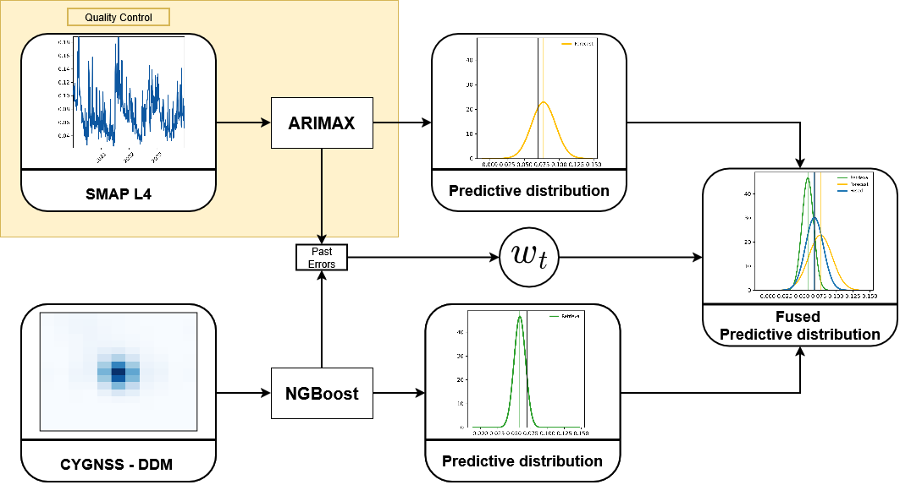
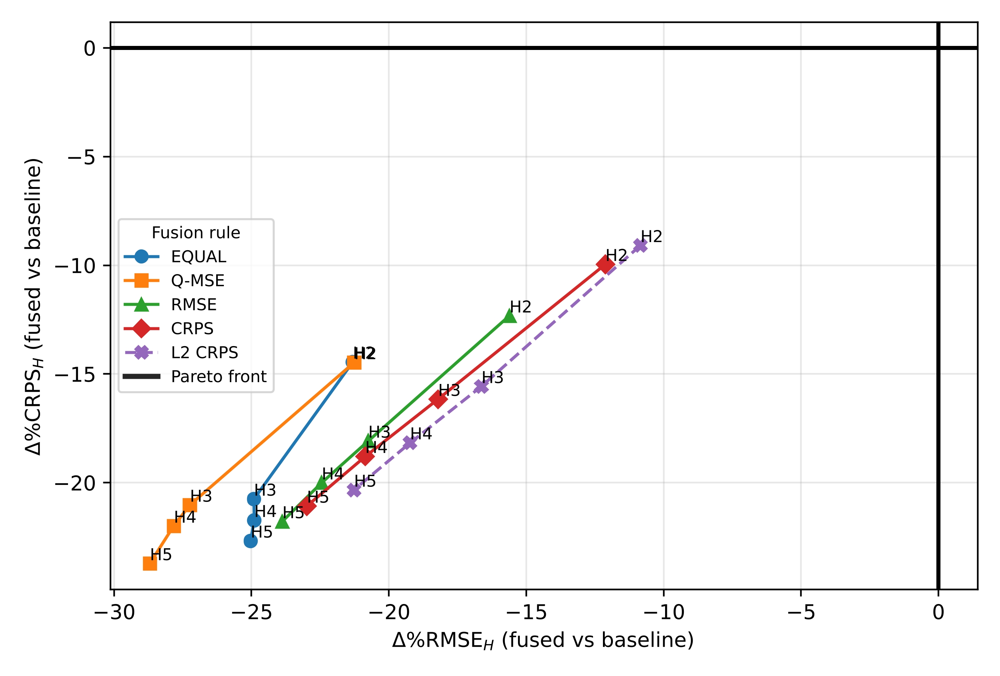
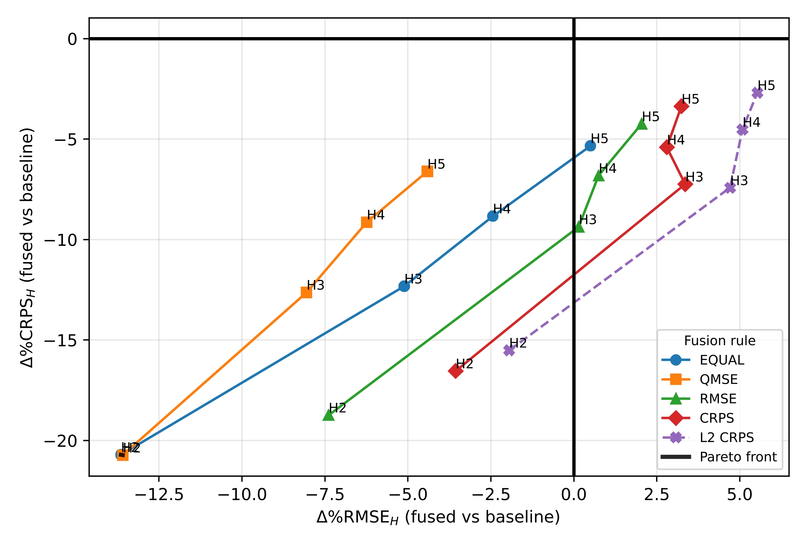

Multi-Source Uncertainty Aware Fusion for Soil Moisture Estimation
Brief: This project studies probabilistic fusion for daily soil-moisture estimation by combining two complementary sources: a forecasting distribution derived from SMAP L4 time-series data and an independent retrieval distribution inferred from CYGNSS GNSS-R delay–Doppler observations. Instead of fusing only point predictions, the method combines full predictive distributions and explicitly evaluates both accuracy and calibration.
The core idea is to treat soil-moisture estimation as a forecast–retrieval fusion problem. The forecasting leg propagates recent SMAP L4 information forward in time, while the retrieval leg provides an observational estimate from CYGNSS when satellite measurements are available. These two predictive distributions are then fused with a one-dimensional Wasserstein-2 barycenter, producing a final soil-moisture estimate together with an uncertainty envelope.
The Problem
Soil moisture is a fundamentally uncertain quantity when estimated from heterogeneous remote-sensing pipelines. Forecasting models accumulate temporal prediction error, while retrieval models inherit uncertainty from the sensing process, observation noise, and incomplete observability of land-surface conditions. For applications such as drought monitoring, irrigation planning, and hydrologic forecasting, point predictions alone are not enough; the system must also quantify how reliable each estimate is.
This project focuses on that uncertainty-aware setting. Rather than asking which single source is best, the question becomes: how should we combine two probabilistic estimators so that the fused product is accurate, calibrated, and operationally meaningful?
Methodology Overview
The pipeline consists of two probabilistic predictors followed by a fusion stage. The target variable is collocated SMAP L4 surface soil moisture, evaluated chronologically with train/validation/test splits at multiple forecast horizons. Each leg outputs a Gaussian predictive distribution, and fusion is performed at the distribution level rather than at the level of scalar means.

End-to-end pipeline: CYGNSS retrieval leg, SMAP L4 forecasting leg, and probabilistic fusion.
Forecasting Leg: SMAP L4 Time-Series Model
The forecasting branch uses a state-space ARIMAX model with exogenous inputs to generate horizon-dependent predictive distributions from the SMAP L4 soil-moisture time series. At each forecast origin, the model produces an H-step-ahead Gaussian forecast, and the filtered state is updated sequentially as new observations arrive while keeping the model parameters fixed.
This branch captures temporal structure and smooth evolution in soil moisture, making it useful when the recent system state is informative. Its strength is continuity and temporal consistency; its limitation is that forecast uncertainty grows with lead time and accumulated model error.
Retrieval Leg: CYGNSS-Based Probabilistic Regression
The retrieval branch estimates soil moisture directly from CYGNSS delay–Doppler map (DDM) observations and auxiliary variables. Features are constructed from flattened DDM information together with seasonal terms and other collocated predictors, and the probabilistic regressor is trained to output a Normal distribution parameterized by a mean and standard deviation.
The model used here is NGBoost (Natural Gradient Boosting) with a Gaussian output distribution, trained by minimizing negative log-likelihood. This gives a retrieval estimate of the form N(μr,t, σ²r,t), allowing the model to express both a point estimate and its associated uncertainty.
Before modeling, CYGNSS observations are filtered through standard preprocessing steps, including conversion from BRCS to reflectivity, removal of low-quality DDMs, exclusion of measurements with low SNR, and filtering out acquisitions affected by precipitation. This keeps the retrieval branch closer to an analysis-ready operational product.
Fusion Rule: W₂ Barycenter in Quantile Space
The most important methodological contribution is the fusion stage. Instead of averaging only means, the method fuses the two predictive distributions using a one-dimensional Wasserstein-2 (W₂) barycenter. In one dimension, this corresponds to weighted averaging of quantile functions.
This has two advantages. First, it preserves the distributional structure of each leg more faithfully than a naive pointwise average. Second, it gives direct access to fused prediction intervals, medians, and uncertainty summaries. For Gaussian predictive legs, the fused mean is a weighted average of component means and the fused standard deviation is a weighted average of component standard deviations, giving a clean closed-form implementation.
As a baseline, I also compare against an L₂ linear opinion pool, which mixes the component CDFs directly. This makes it possible to test whether quantile-space optimal-transport fusion provides a practical benefit over simpler probabilistic pooling.
Weight Selection Strategy
A major part of the study is not just the fusion rule itself, but how to choose the fusion weight. For each site and forecast horizon, a single scalar weight is fitted on the validation split and then fixed for test evaluation.
I compare several strategies:
- Equal weighting, as a simple non-adaptive baseline.
- RMSE-tuned weighting, which favors point accuracy of the fused mean.
- CRPS-tuned weighting, which optimizes the full predictive distribution.
- qMSE weighting, which minimizes squared error in quantile space and explicitly balances mean accuracy and dispersion.
- L₂-CRPS weighting, used for the linear-pooling baseline.
In practice, the qMSE rule is especially interesting because it does not optimize only a point metric; it encourages a better trade-off between sharpness, calibration, and central accuracy. That makes it better aligned with the goals of uncertainty-aware environmental prediction.
Experimental Setup
Experiments are carried out on SoilSCAPE sites jr1, jr2, and jr3, which provide long enough records to support stable time-series forecasting and repeated horizon-wise evaluation. The target variable is collocated SMAP L4 surface soil moisture, while CYGNSS DDM observations and auxiliary variables form the retrieval inputs.
Evaluation is performed for forecast horizons H = 2, 3, 4, 5 using a chronological train/validation/test split. Fusion weights are selected on validation only, then the component models are refit on train + validation and evaluated on a held-out test set with the validation-selected weight fixed.
The main metrics are:
- RMSE for point accuracy of the fused median prediction.
- CRPS for probabilistic skill of the predictive distribution.
- ECE for calibration, computed from the mismatch between nominal and empirical coverage of prediction intervals.
Results and Findings
The main empirical takeaway is that probabilistic fusion improves reliability and often improves accuracy as well. At horizon H = 3, the W₂ fusion with qMSE-based weighting consistently achieves the best calibration across all three sites and is competitive or best on RMSE and CRPS depending on the site. On jr2 in particular, fusion improves both RMSE and CRPS relative to either standalone predictor, showing that the forecast and retrieval legs provide genuinely complementary information.
More broadly, the experiments show that weight choice matters as much as the fusion rule. RMSE-tuned and CRPS-tuned weights do not necessarily produce the most reliable intervals, while qMSE tends to deliver the most stable trade-off between point accuracy and uncertainty calibration. This is an important result because it highlights that good uncertainty-aware fusion is not just about combining sources, but about selecting the objective that defines what “good” means.

JR2 horizon-wise fusion gains relative to the forecast baseline in the RMSE–CRPS plane.

JR2 horizon-wise fusion gains relative to the retrieval baseline in the RMSE–CRPS plane.
The Pareto-style analysis on jr2 is particularly useful because it makes the trade-off visible: relative to the forecasting baseline, fusion points lie in the improving region across horizons, while relative to retrieval, CRPS gains remain more consistent than RMSE gains. This means fusion reliably improves probabilistic skill, but the exact point-accuracy benefit depends on horizon and weight-selection strategy.
Technical Contribution
From a machine-learning perspective, the contribution of this project is not a single new model but a well-structured probabilistic decision pipeline:
- a time-series forecasting model for temporally coherent predictive distributions,
- a probabilistic retrieval model for observation-driven estimates from GNSS-R measurements,
- an optimal-transport-based fusion mechanism for combining the two distributions, and
- a validation framework that evaluates both accuracy and calibration rather than only RMSE.
This makes the system practical for real uncertainty-aware monitoring scenarios, where different sources carry different failure modes and confidence levels.
Implementation
Code: github.com/lpoly/IGARSS-2026
- Python for the full experimental pipeline
- NGBoost for probabilistic CYGNSS retrieval
- State-space ARIMAX / SARIMAX tooling for SMAP L4 forecasting
- NumPy / Pandas / SciPy for feature handling, distribution computations, and evaluation
- Matplotlib for quantitative analysis and figures
Why This Matters
In environmental monitoring, better uncertainty estimates can be as important as better mean predictions. A fused product that is slightly more conservative but much better calibrated may be more useful in practice than a sharp but overconfident predictor. This project is a good example of that principle: the methodology is designed not only to improve soil-moisture estimates, but to make those estimates more trustworthy.
More generally, the project sits at the intersection of remote sensing, probabilistic machine learning, and optimal transport. It shows how ideas from uncertainty quantification and distributional fusion can be turned into a concrete, testable pipeline for geoscience applications.
Publication Details
Conference: IEEE International Geoscience and Remote Sensing Symposium (IGARSS) 2026
Status: Accepted
Paper: “Multi-Source Uncertainty Aware Fusion for Soil Moisture Estimation”